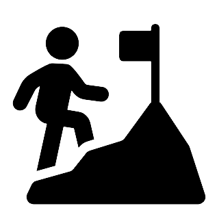

Prêt à camper
Que ce soit dans un campement rustique ou dans l'un de nos nombreux type de chalet, le Parc national du Mont-Mégantic saura vous offrir un confort pratique avec ses habitations fournissant cuisinette, chauffage au bois et matelas.
Camping sauvage
Nos terrains de campings sont accessible à pied ou à vélo. Profitez d'une soirée à la belle étoile: notre ciel étoilé est unique au monde puisque l'observatoire du Mont-Mégantic bénéficie d'une protection contre la pollution lumineuse.
Observation de la faune
La faune du Mont-Mégantic est composée de plusieurs espèces associées habituellement à des régions plus nordiques. Avec un peu de chance, vous serez rencontré par la Mésangeai du Canada lors de votre arrivée au sommet! La flore quant à elle comporte plusieurs espèces rares.
Localisation
|
Randonnée
14 sentiers sont disponibles pour vous dégourdir les jambes. De niveau débutant à difficile, vous serez en mesure de vous évader pour quelques heures! |
|||
| Niveaux | Sentiers | ||

|
Debutant |
|
|
|  | Moyen |
|
|

|
Avancé |
|
|
Pour un avant-goût du parc, cliquez sur le bouton!